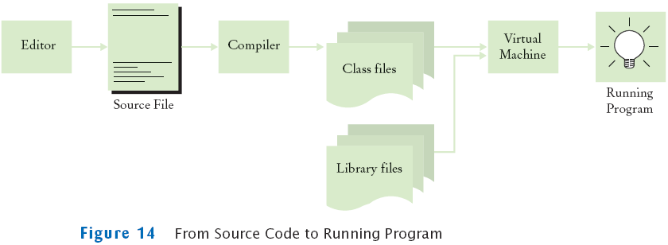
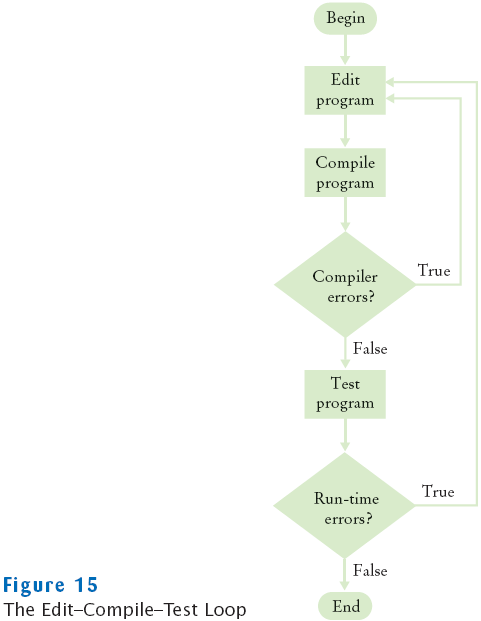

Suppose you omit the // characters from the
HelloTester.java program but not
the remainder of the comment. Will you get a compile-time error or a
run-time
error?
How can you find logic errors in a program?
Answers
A compile-time error. The compiler will not know what
to do with the word
display.
You need to run the program and observe its behavior.
The Compilation Process

The Edit-Compile-Test Loop

Self Check
What do you expect to see when you load a class file
into your text editor?
Why can't you test a program for run-time errors when it has
compiler errors?
Answers
A sequence of random characters, some funny-looking.
Class files contain virtual
machine instructions that are encoded as binary numbers.
When a program has compiler errors, no class file is produced,
and there is
nothing to run.